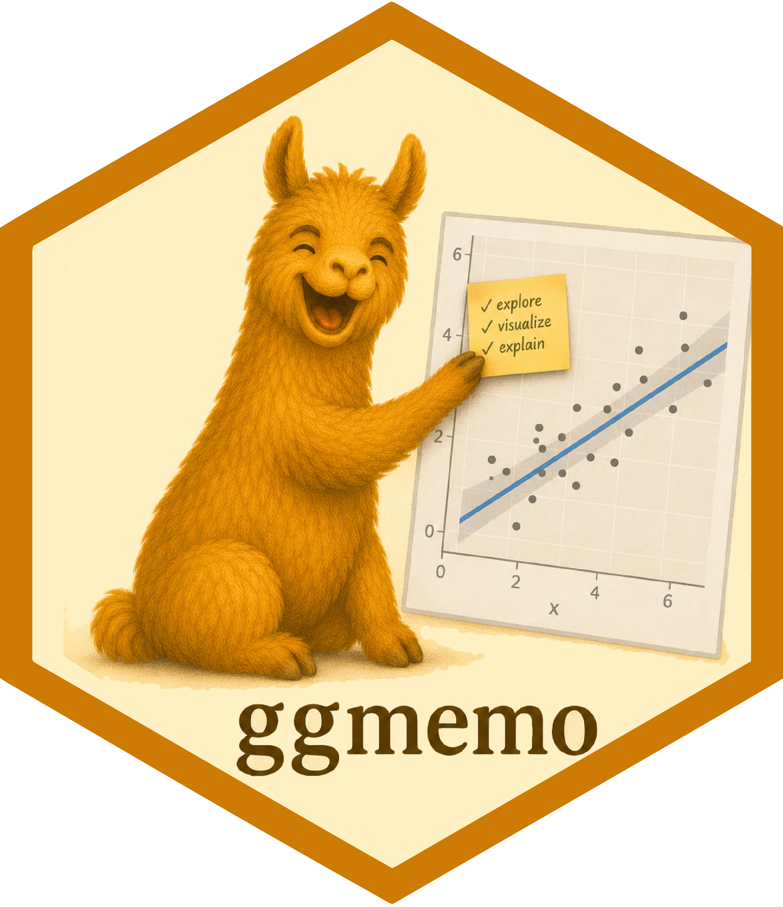
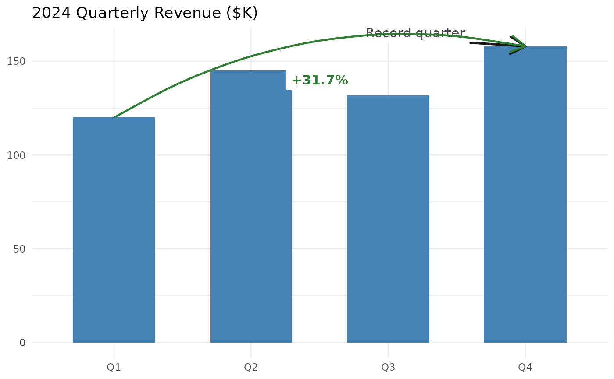

ggmemo: Add Arrows, Labels, and Change Annotations to ggplot2 Charts
Source:R/ggmemo-package.R
ggmemo-package.RdAdd arrows, labels, and change annotations to ggplot2 charts in one line of code. Two functions:
annotate_callout(): Point at a data row with an arrow and label.annotate_change(): Show the delta between two rows as percent change, absolute change, or percentage points.
Both return standard ggplot2 layers — add them with +.
Install from GitHub (not on CRAN):
pak::pak("lindsay-lintelman/ggmemo")Why ggmemo instead of manual ggplot2 annotation?
Manual annotation requires hardcoding coordinates, computing deltas, formatting labels, and picking colors (~10 lines). ggmemo replaces that with a single function call:
# Without ggmemo:
annotate("segment", x = "Q1", xend = "Q4", y = 120, yend = 158,
arrow = arrow(length = unit(0.15, "inches")),
colour = "#2E7D32", linewidth = 0.6) +
annotate("label", x = 2.5, y = 139, label = "+31.7
colour = "#2E7D32", fill = "white", fontface = "bold")
# With ggmemo:
annotate_change(data, from = quarter == "Q1",
to = quarter == "Q4", value = revenue)
Quick reference
# Label a data point
annotate_callout(data, where, label, position, nudge, ...)
# Show change between two points
annotate_change(data, from, to, value, format, colors, ...)
format options: "percent" (default), "absolute", "points", "both"
Common tasks
| Label a peak or milestone | annotate_callout(df, where = date == "2024-06-01", label = "Peak") |
| Show percent change | annotate_change(df, from = ..., to = ..., value = sales) |
| Show absolute difference | annotate_change(..., format = "absolute") |
| Show percentage point change | annotate_change(..., format = "points") |
| Use custom colors | annotate_change(..., colors = c(up = "#1B9E77", down = "#D95F02", flat = "#999")) |
| Override label styling | annotate_callout(..., size = 4, fill = "lightyellow") |
When to use ggmemo
Use ggmemo when you want to annotate a ggplot2 chart with arrows, callout labels, or change annotations without manually computing coordinates, formatting deltas, or positioning text. Common scenarios: quarterly reports, executive dashboards, time-series narration, before/after comparisons.
When NOT to use ggmemo
Repelling overlapping labels: use the ggrepel package.
NPC (normalized parent coordinates) positioning: use the ggpp package.
Interactive annotations: use plotly or ggiraph.
Theming or styling: use ggthemes, hrbrthemes, or bbplot.
Author
Maintainer: Lindsay Lintelman lindsay.lintelman@posit.co
Authors:
Lindsay Lintelman lindsay.lintelman@posit.co
Examples
library(ggplot2)
library(ggmemo)
# -- Complete template: narrated business chart --
# Data
revenue <- data.frame(
quarter = factor(c("Q1", "Q2", "Q3", "Q4"),
levels = c("Q1", "Q2", "Q3", "Q4")),
revenue = c(120, 145, 132, 158)
)
# Annotated chart
ggplot(revenue, aes(x = quarter, y = revenue)) +
geom_col(fill = "steelblue", width = 0.6) +
annotate_callout(
revenue,
where = quarter == "Q4",
label = "Record quarter",
position = "top-left"
) +
annotate_change(
revenue,
from = quarter == "Q1",
to = quarter == "Q4",
value = revenue
) +
labs(title = "2024 Quarterly Revenue ($K)", x = NULL, y = NULL) +
theme_minimal()
